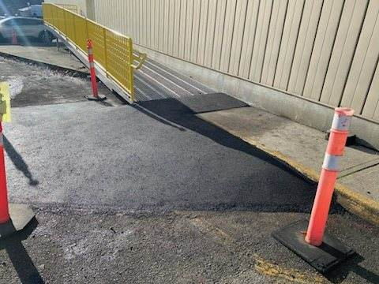
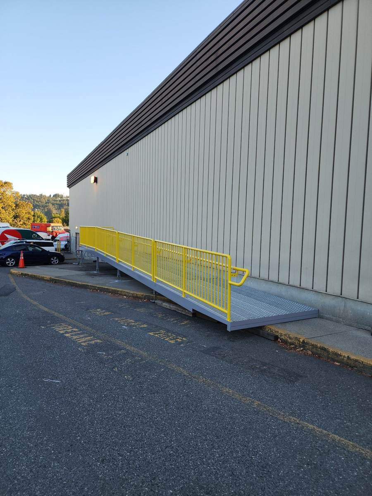
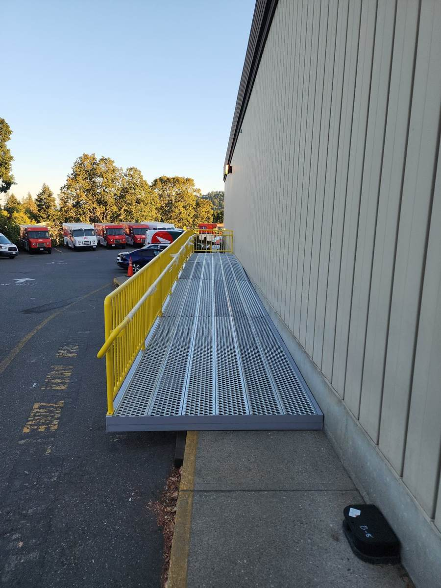
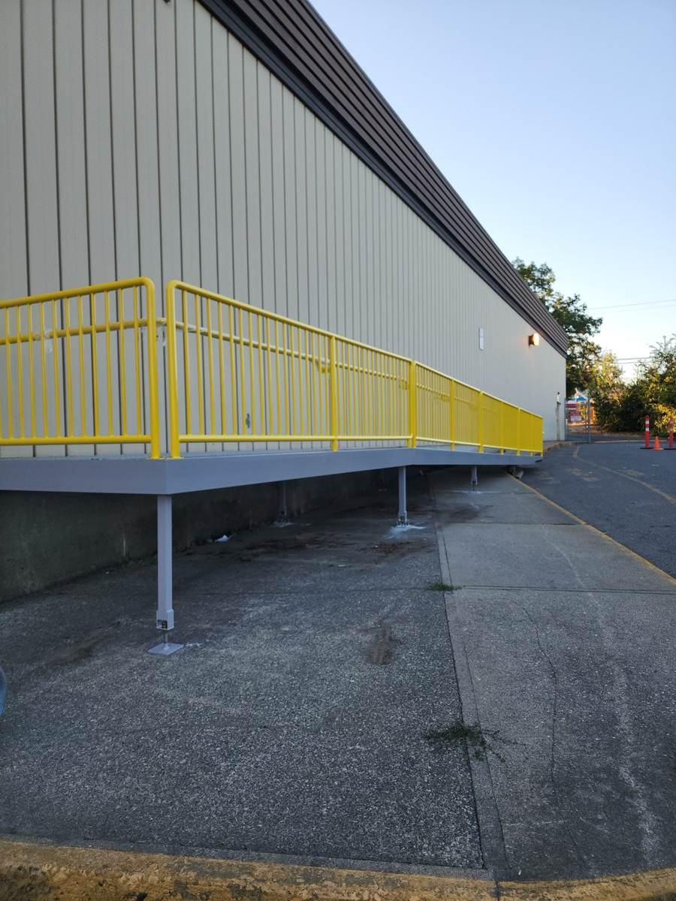
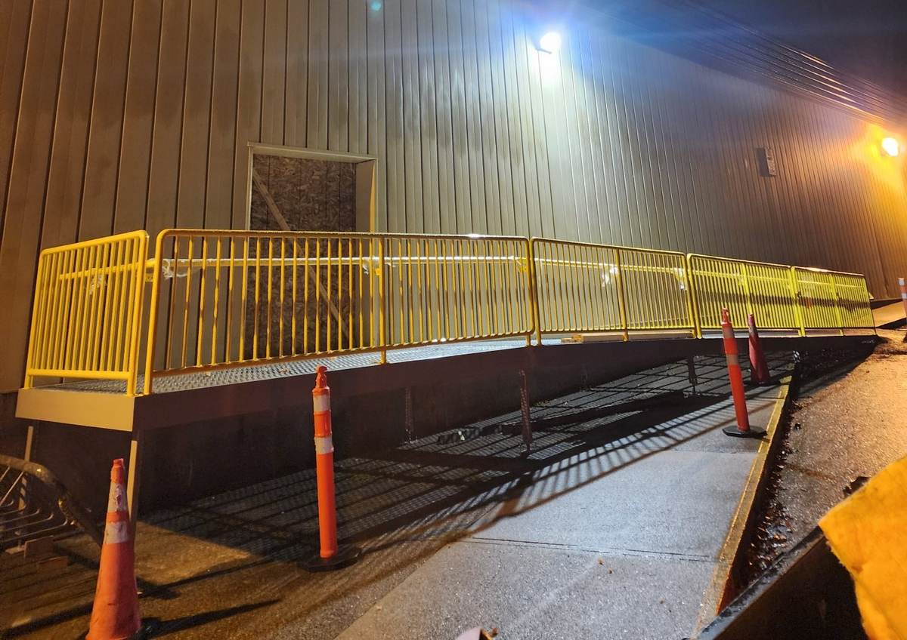
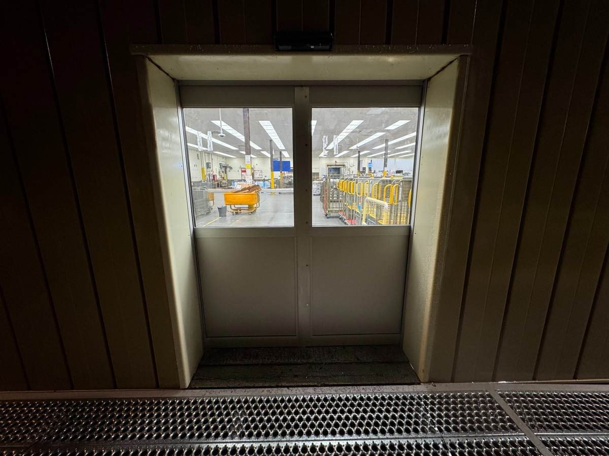
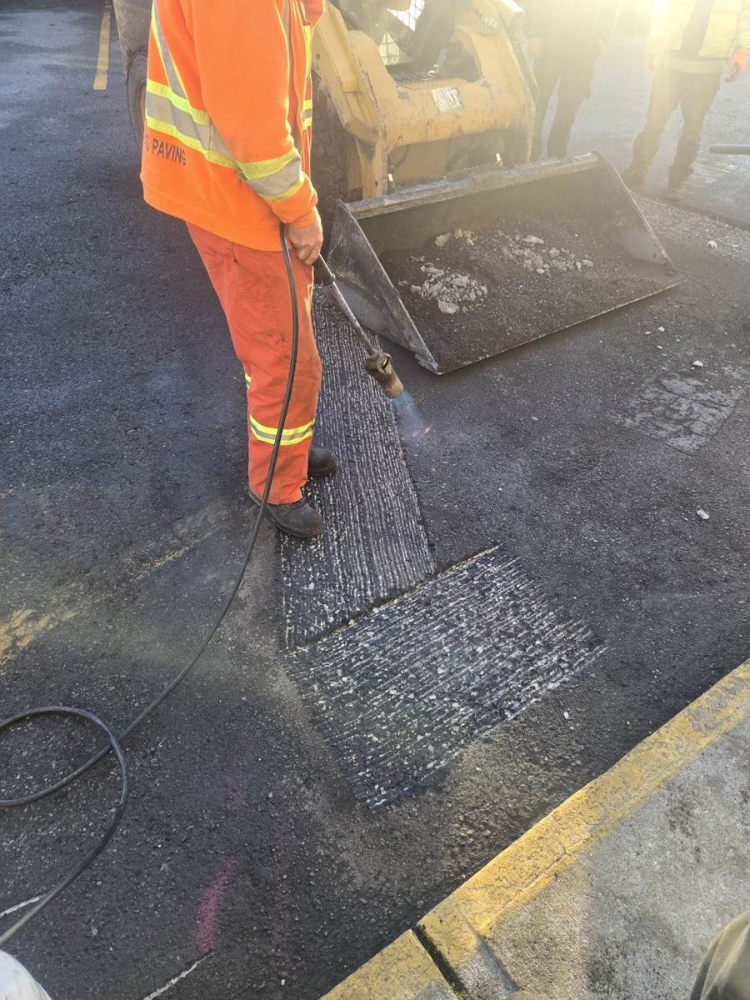

Nanaimo, BC
Create a new cart-access entrance between the yard and the building, about four feet above a sloped sidewalk.
Cutting a new structural opening into an occupied, operating building, while meeting railing and slope requirements on the ramp and keeping the facility running throughout.
Cut and framed the new door opening, installed an automatic double sliding door on sensors, fabricated a steel ramp and landing to the engineered slope with continuous handrails and guards, anchored it to the existing sidewalk, added walkway lighting, and paved a new approach ramp.
A safe, code-compliant cart route between yard and building, lit for after-hours use and built without disrupting daily operations.
Click any photo to view the full gallery.

In progress
In progress
In progress
Completed
Completed
In progressTell us the goal and the constraints. We'll tell you honestly what it will take.